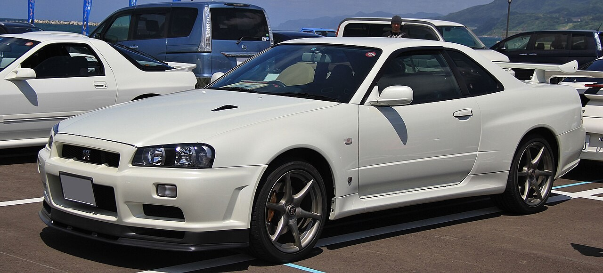
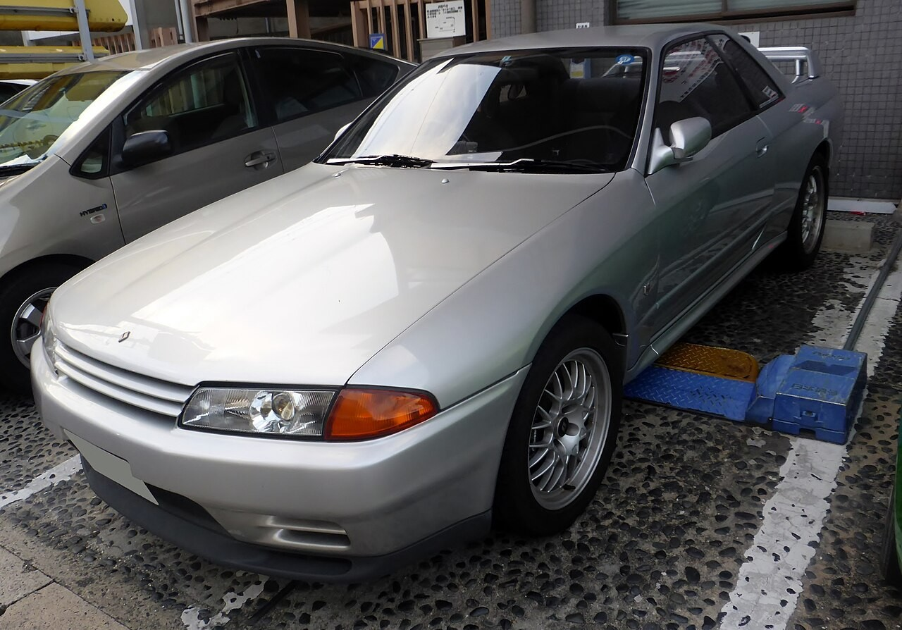
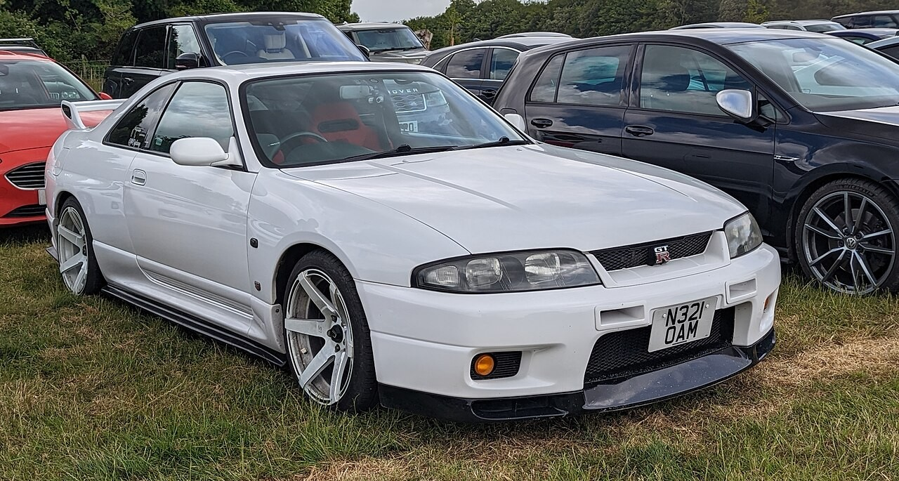
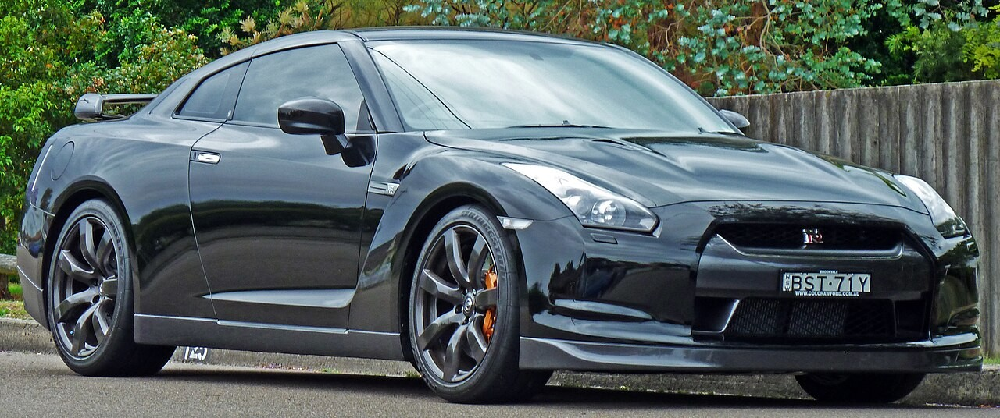
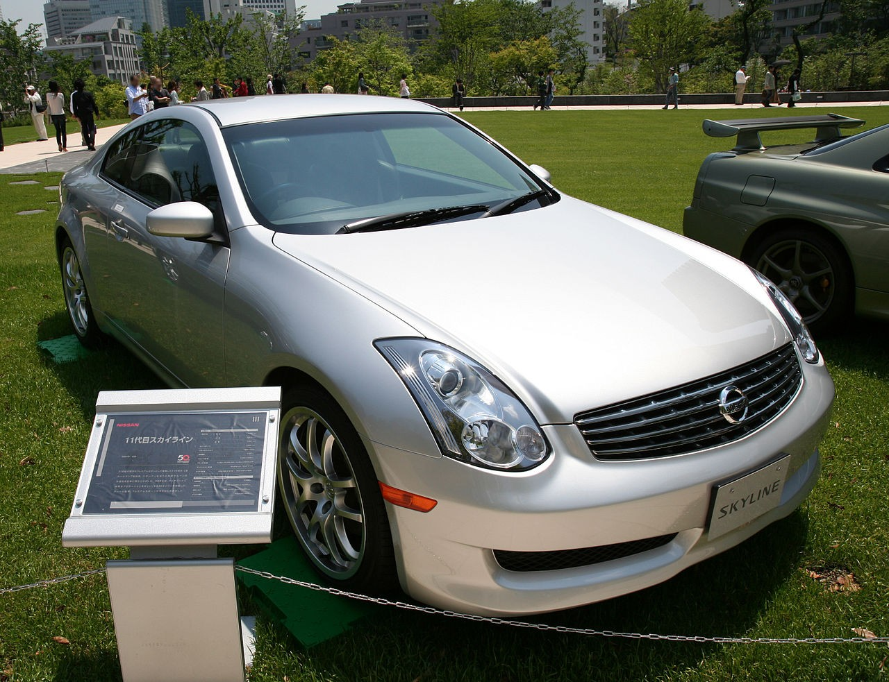

1957
Рождение Skyline
Prince Motor Company представляет первый Skyline — премиальный японский седан.
Загрузка легенды...

Since 1957 · Japan
Легенда, которая переписала правила. От скромного седана — до культа мирового автоспорта.
Глава I
От Prince Skyline 1957 года до рождения GT-R — история амбиций, инженерии и побед.
Prince Motor Company представляет первый Skyline — премиальный японский седан.
Skyline 2000GT-R «Hakosuka» — 160 л.с. и 52 победы на гоночных трассах.
R32 GT-R с RB26DETT и ATTESA E-TS — монстр, уничтоживший Group A.
Финальное поколение классического GT-R. Икона JDM и мировой поп-культуры.
GT-R становится самостоятельной моделью. VR38DETT и ручная сборка Takumi.
Глава II
Наведите на карточку — узнайте характеристики. Кликните — переверните.

«Godzilla»

Nürburgring Hunter
Король JDM

Суперкар
Глава III
Рядный 6-цилиндровый битурбо — один из величайших двигателей в истории автоспорта. Кованые коленвал и поршни, два параллельных турбокомпрессора, потенциал свыше 1000 л.с. в тюнинге.
Глава IV
Выберите модель — характеристики обновятся в реальном времени.
Глава V
Skyline GT-R — символ целой эпохи. Кино, аниме, игры, уличные гонки.
Серебристый R34 Брайана О'Коннера — машина мечты миллионов зрителей по всему миру.
R32 GT-R в руках Сигэхиро Кунимото — культовый образ в легендарном аниме о дрифте.
Skyline присутствует с первой части (1997). Для многих — первая встреча с GT-R.
Тюнинг, дрифт, стенс, Wangan — Skyline в центре каждого направления японского автоспорта.
«На треке нет заменителя GT-R. На улице — тоже.»

Эпилог
GT-R стал самостоятельной легендой, а линейка Skyline продолжает эволюцию — от V35 с V6-двигателем до современных гибридных версий.
65+ лет. 5 поколений GT-R. Одна неугасимая страсть.
Nissan Skyline — интерактивная презентация